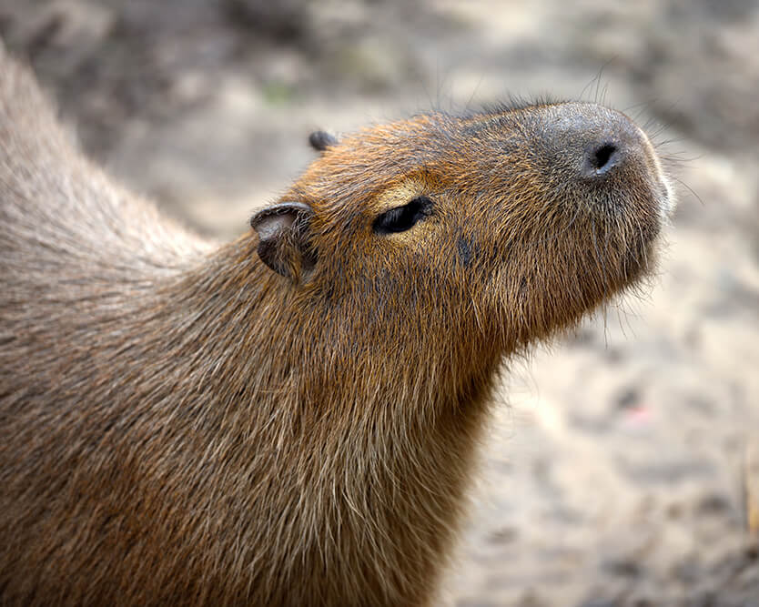

Kapibara (capybara), Güney Amerika’nın sulak alanlarında yaşayan ve dünyanın en büyük kemirgeni olarak bilinen bir hayvandır; ortalama 100–130 cm uzunluğa ve 35–65 kg ağırlığa ulaşır, kalın kahverengi–kızıl kürküyle çevresine uyum sağlar. Yarı sucul bir yaşam sürer, perdeli ayakları sayesinde iyi bir yüzücüdür ve çoğunlukla nehir, göl ve bataklık kenarlarında bulunur. Otçul beslenir; çimen, su bitkileri ve meyvelerle beslenir. Sosyal yapısıyla dikkat çeker, genellikle 10–20 bireyden oluşan gruplar halinde yaşar ve bu gruplar birbirlerini seslerle ve kokularla iletişim kurarak korur. Doğada ortalama 8–10 yıl kadar yaşayabilir. Kültürel açıdan ise Güney Amerika halklarının doğa ile uyumlu, sakin ve barışçıl yaşamın sembolü olarak gördüğü bir türdür; günümüzde ise sevimli ve sosyal davranışlarıyla popülerleşmiş, birçok yerde “arkadaş canlısı hayvan” olarak tanımlanmıştır.